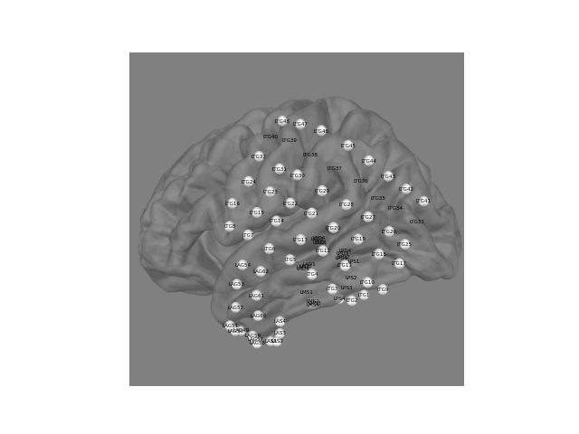
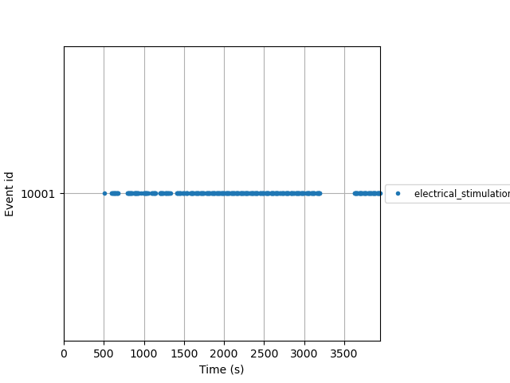

Note
Go to the end to download the full example code
Basis Profile Curve (BPC) analysis¶
In this example, we will show how to use basis profile curve (BPC) analysis to quantify the shapes and strengths of connectivity from electrical stimulation sites to a recording site.
To do: format citation https://doi.org/10.1101/2021.01.24.428020
# Authors: Alex Rockhill <aprockhill@mailbox.org>
# Dora Hermes
#
# License: BSD-3-Clause
from pathlib import Path
import numpy as np
import openneuro
import mne
import mne_bids
import pandas as pd
import matplotlib.pyplot as plt
import matplotlib.cm as cm
from sklearn.decomposition import NMF
from scipy import stats
First, download the dataset.
dataset = 'ds003708'
root = Path('..') / '..' / dataset
# openneuro.download(dataset=dataset, target_dir=root)
Load the data and plot channel positions and events.
path = mne_bids.BIDSPath(
subject='01', session='ieeg01', task='ccep', run='01', root=root)
raw = mne_bids.read_raw_bids(path)
trans = mne.transforms.Transform(fro='head', to='mri', trans=np.eye(4)) # identity
fig = mne.viz.plot_alignment(
raw.info, trans=trans, subject='fsaverage', surfaces='pial')
mne.viz.set_3d_view(fig, azimuth=190)
xy, im = mne.viz.snapshot_brain_montage(fig, raw.info)
fig, ax = plt.subplots()
ax.axis('off')
ax.imshow(im)
for name, pos in xy.items():
if pos[0] >= 0 and pos[1] >= 0: # no NaN locations
ax.text(*pos, name, ha='center', va='center', fontsize=4)
events, event_id = mne.events_from_annotations(raw)
mne.viz.plot_events(events, raw.info['sfreq'], event_id=event_id, show=False)
- 
- 
Extracting parameters from ../../ds003708/sub-01/ses-ieeg01/ieeg/sub-01_ses-ieeg01_task-ccep_run-01_ieeg.vhdr...
Setting channel info structure...
Reading events from ../../ds003708/sub-01/ses-ieeg01/ieeg/sub-01_ses-ieeg01_task-ccep_run-01_events.tsv.
Reading channel info from ../../ds003708/sub-01/ses-ieeg01/ieeg/sub-01_ses-ieeg01_task-ccep_run-01_channels.tsv.
/home/alexrockhill/Downloads/bpc_jupyter/examples/plot_bpc.py:42: RuntimeWarning: MNI152NLin6Sym is not an MNE-Python coordinate frame for IEEG data and so will be set to 'unknown'
raw = mne_bids.read_raw_bids(path)
Reading electrode coords from ../../ds003708/sub-01/ses-ieeg01/ieeg/sub-01_ses-ieeg01_space-MNI152NLin6Sym_electrodes.tsv.
/home/alexrockhill/Downloads/bpc_jupyter/examples/plot_bpc.py:42: RuntimeWarning: There are channels without locations (n/a) that are not marked as bad: ['EKG']
raw = mne_bids.read_raw_bids(path)
/home/alexrockhill/projects/mne-bids/mne_bids/dig.py:610: RuntimeWarning: Not setting position of 1 ecg channel found in montage:
['EKG']
Consider setting the channel types to be of EEG/sEEG/ECoG/DBS/fNIRS using inst.set_channel_types before calling inst.set_montage, or omit these channels when creating your montage.
raw.set_montage(montage, on_missing="warn")
Using pyvistaqt 3d backend.
/home/alexrockhill/Downloads/bpc_jupyter/examples/plot_bpc.py:45: RuntimeWarning: Got coordinate frame "unknown" for ['LAS1', 'LAS2', 'LAS3', 'LAS4', 'LMS1', 'LMS2', 'LMS3', 'LMS4', 'LPS1', 'LPS2', 'LPS3', 'LPS4', 'LTG1', 'LTG2', 'LTG3', 'LTG4', 'LTG5', 'LTG6', 'LTG7', 'LTG8', 'LTG9', 'LTG10', 'LTG11', 'LTG12', 'LTG13', 'LTG14', 'LTG15', 'LTG16', 'LTG17', 'LTG18', 'LTG19', 'LTG20', 'LTG21', 'LTG22', 'LTG23', 'LTG24', 'LTG25', 'LTG26', 'LTG27', 'LTG28', 'LTG29', 'LTG30', 'LTG31', 'LTG32', 'LTG41', 'LTG42', 'LTG43', 'LTG44', 'LTG45', 'LTG46', 'LTG47', 'LTG48', 'LAG49', 'LAG50', 'LAG51', 'LAG52', 'LAG53', 'LAG54', 'LAG57', 'LAG58', 'LAG59', 'LAG60', 'LAG61', 'LAG62', 'LAD1', 'LAD2', 'LAD3', 'LAD4', 'LSD1', 'LSD2', 'LSD3', 'LSD4', 'LPD1', 'LPD2', 'LPD3', 'LPD4'], assuming "head" coordinates.
fig = mne.viz.plot_alignment(
Channel types:: ecog: 64, seeg: 12
Used Annotations descriptions: ['electrical_stimulation']
<Figure size 640x480 with 1 Axes>
Create epochs around stimulation, visualize data.
contact = 'LMS2'
tmin, tmax = -1, 2
bl_tmin, bl_tmax = -0.5, -0.05
# try ``baseline=None`` for no baseline correction to play around
metadata = pd.read_csv(path.update(suffix='events'), sep='\t')
keep = metadata.trial_type == 'electrical_stimulation'
if 'status' in metadata:
keep = np.logical_and(keep, metadata.status == 'good')
metadata = metadata[keep]
epochs = mne.Epochs(raw, events[keep],
tmin=tmin, tmax=tmax,
baseline=(bl_tmin, bl_tmax), picks=[contact],
preload=True)
epochs.metadata = metadata # contains stimulation location information
# unpack each pair separated by a hyphen, only use trials where
# stimulation was delivered to channels other than the channel of
# interest
epochs.metadata['site1'], epochs.metadata['site2'] = np.array([
sites.split('-') for sites in
epochs.metadata.electrical_stimulation_site]).T
exclude = np.in1d(epochs.metadata.site1, contact) | \
np.in1d(epochs.metadata.site2, contact)
epochs = epochs[~exclude]
epochs.plot_image(picks=[contact], cmap='viridis', vmin=-250, vmax=250)
Not setting metadata
391 matching events found
Applying baseline correction (mode: mean)
0 projection items activated
Loading data for 391 events and 6145 original time points ...
0 bad epochs dropped
Adding metadata with 14 columns
Not setting metadata
386 matching events found
No baseline correction applied
0 projection items activated
[<Figure size 640x480 with 4 Axes>]
Calculate BPCs.
bpc_tmin, bpc_tmax = 0.015, 1
stim_sites = epochs.metadata.electrical_stimulation_site
V = epochs.get_data(tmin=bpc_tmin, tmax=bpc_tmax)[:, 0] # select only channel
times = epochs.times[(epochs.times >= bpc_tmin) & (epochs.times <= bpc_tmax)]
V0 = V / np.linalg.norm(V, axis=1)[:, None] # L2 norm each trial
P = V0 @ V.T # calculate internal projections
pairs = np.array(sorted(np.unique(stim_sites)))
tmat = np.zeros((len(pairs), len(pairs)))
for i, pair1 in enumerate(pairs):
for j, pair2 in enumerate(pairs):
b = P[np.ix_(stim_sites == pair1, stim_sites == pair2)]
if i == j: # subset without diagonal
b = np.concatenate([b[np.tril_indices(b.shape[0], k=-1)],
b[np.triu_indices(b.shape[0], k=1)]])
b = b.ravel()
tmat[i, j] = np.mean(b) * np.sqrt(len(b)) / np.std(b, ddof=1)
fig, ax = plt.subplots()
img = ax.imshow(tmat, vmin=0, vmax=10)
ax.set_xticks(range(tmat.shape[0]))
ax.set_xticklabels(pairs, rotation=90, fontsize=6)
ax.set_xlabel('Stimulation Pair')
ax.set_yticks(range(tmat.shape[0]))
ax.set_yticklabels(pairs, fontsize=6)
ax.set_ylabel('Stimulation Pair')
ax.set_title(r'Significance Matrix $\Xi$', fontsize=15)
fig.colorbar(img, ax=ax)
fig.subplots_adjust(bottom=0.2)
fig.show()
t0 = tmat.copy()
t0[t0 < 0] = 0
t0[np.isnan(t0)] = 0
t0 /= (np.max(t0))
cluster_dim = 9
n_reruns = 20
tol = 1e-5
random_state = 11
for n_components in range(cluster_dim, 1, -1):
this_error = None
for k in range(n_reruns):
model = NMF(n_components=n_components, init='random', solver='mu',
tol=tol, max_iter=10000, random_state=random_state).fit(t0)
if this_error is None or model.reconstruction_err_ < this_error:
this_error = model.reconstruction_err_
W = model.transform(t0)
H = model.components_
H /= np.linalg.norm(H, axis=1)[:, None]
nmf_penalty = np.triu(H @ H.T, k=1).sum()
print(f'Inner dimension: {n_components}, off diagonal score: {nmf_penalty}')
if nmf_penalty < 1:
break
Inner dimension: 9, off diagonal score: 13.586655375330714
Inner dimension: 8, off diagonal score: 13.830209145444451
Inner dimension: 7, off diagonal score: 6.879772475317331
Inner dimension: 6, off diagonal score: 4.469056055412816
Inner dimension: 5, off diagonal score: 4.30738637781777
Inner dimension: 4, off diagonal score: 2.299036540778825
Inner dimension: 3, off diagonal score: 0.6818650369085922
find stimulation trials for every BPC
def kpca(X):
F, S, _ = np.linalg.svd(X.T) # Compute the eigenvalues and right eigenvectors
ES = X @ F # kernel trick
# divide through to obtain unit-normalized eigenvectors
E = ES / (np.ones((X.shape[0], 1)) @ S[None])
return E
# find significant pairs per BPC; must be > threshold and greater than other BPCs
bpc_pairs = np.zeros((len(pairs))) * np.nan # index of bpc
Bs = np.zeros((n_components, V.shape[1])) # n_BPCs x n_times
for bpc_idx in range(n_components): # loop over BPCs
bpc_pair_idxs = np.where((H[bpc_idx] == np.max(H, axis=0)) &
(H[bpc_idx] > 1 / (2 * np.sqrt(len(pairs)))))[0]
bpc_pairs[bpc_pair_idxs] = bpc_idx
bpc_trials = np.concatenate([np.where(stim_sites == pairs[idx])[0]
for idx in bpc_pair_idxs])
Bs[bpc_idx] = kpca(V[bpc_trials].T)[:, 0] # basis vector is 1st PC
if np.mean(Bs[bpc_idx] @ V[bpc_trials].T) < 0:
Bs[bpc_idx] *= -1 # sign flip
print(bpc_idx, bpc_pair_idxs)
excluded_pairs = pairs[np.isnan(bpc_pairs)]
0 [ 9 16 17 18 21 36 37]
1 [ 0 1 2 3 11 12 19 29 38]
2 [ 4 5 6 7 8 13 14 15 23 24 32 34 35]
plot BPCs
colors = cm.tab10(np.linspace(0, 1, 10))
fig, ax = plt.subplots(figsize=(5, 4))
for i, bpc in enumerate(Bs):
ax.plot(times, bpc, color=colors[i], label=i)
ax.set_xlabel('Time from stimulation (s)')
ax.set_ylabel('Normalized weight of BPCs')
ax.set_title('Calculated BPCs', fontsize=15)
ax.legend()
fig.tight_layout()
fig.show()
curve statistics
alphas = np.zeros((len(stim_sites))) * np.nan
epsilon2s = np.zeros((len(stim_sites))) * np.nan
V2s = np.zeros((len(stim_sites))) * np.nan
errxprojs = np.zeros((len(pairs))) * np.nan
p_vals = np.zeros((len(pairs))) * np.nan
plotweights = np.zeros((len(pairs))) * np.nan
for bpc_idx in range(n_components): # loop over BPCs
# alpha coefficient weights for basis curve into V
bpc_alphas = Bs[bpc_idx] @ V.T
# residual epsilon (error timeseries) for basis bb after alpha*B coefficient fit
bpc_epsilon2 = V - (Bs[bpc_idx][:, None] @ bpc_alphas[None]).T
errxproj = bpc_epsilon2 @ bpc_epsilon2.T # calculate all projections of error
V_selfproj = V @ V.T # power in each trial
# cycle through pair types represented by this basis curve
for pair_idx in np.where(bpc_pairs == bpc_idx)[0]:
trials = stim_sites == pairs[pair_idx]
# alpha coefficient weights for basis curve bb into V
alphas[trials] = bpc_alphas[trials]
# self-submatrix of error projections
a = errxproj[np.ix_(trials, trials)]
epsilon2s[trials] = np.diag(a)
# sum-squared individual trials
V2s[trials] = np.diag(V_selfproj[np.ix_(trials, trials)])
# gather all off-diagonal elements from self-submatrix
b = np.concatenate([a[np.tril_indices(a.shape[0], k=-1)],
a[np.triu_indices(a.shape[0], k=1)]])
# systematic residual structure within a stim pair group for a given basis will be
# given by set of native normalized internal cross-projections
errxproj[pair_idx] = np.mean(b) * np.sqrt(len(b)) / np.std(b, ddof=1)
plotweights[pair_idx] = np.mean(alphas[trials] / np.sqrt(epsilon2s[trials]))
T_stat, p_val = stats.ttest_1samp((alphas[trials] / np.sqrt(epsilon2s[trials])), 0)
p_vals[pair_idx] = p_val
Plot the final results.
colors = cm.tab10(np.linspace(0, 1, 10))
fig, ax = plt.subplots()
ax.axis('off')
ax.imshow(im)
for i, name in enumerate(pairs):
if np.isnan(bpc_pairs[i]):
continue
ch0, ch1 = name.split('-')
pos = (xy[ch0] + xy[ch1]) / 2
if pos[0] < 0 or pos[0] > im.shape[0] or pos[1] < 0 or pos[1] > im.shape[1]:
continue
color = colors[int(bpc_pairs[i])]
size = plotweights[i] * 200
ax.scatter(*pos, color=color[:3], s=[size], alpha=0.75)
fig.show()
Put it all together into a function.
''' Work in progress
def bpcs(V, stim_sites, cluster_dim=10, n_reruns=20, tol=1e-5,
random_state=99, verbose=True):
"""Compute basis profile curves of an evoked response.
Parameters
----------
V : np.ndarray (n_epochs, n_samples)
The voltage time course for the channel of interest.
stim_sites : np.ndarray (n_epochs)
The stimulation sites for each epoch.
cluster_dim : int
The maximum dimension of the clusters.
n_reruns : int
The number of reruns of non-negative matrix factorization
to ensure convergence.
tol : float
The convergence tolerance threshold.
random_state : int
Reproducibility seed.
verbose : bool
Whether to print function status updates.
Returns
-------
tmat : np.ndarray (n_pairs, n_pairs)
The projection matrix.
"""
V0 = V / np.linalg.norm(V, axis=1)[:, None] # L2 norm each trial
P = V0 @ V.T # calculate internal projections
pairs = np.array(sorted(np.unique(stim_sites)))
tmat = np.zeros((len(pairs), len(pairs)))
for i, pair1 in enumerate(pairs):
for j, pair2 in enumerate(pairs):
b = P[np.ix_(stim_sites == pair1, stim_sites == pair2)]
if i == j: # subset without diagonal
b = np.concatenate([b[np.tril_indices(b.shape[0], k=-1)],
b[np.triu_indices(b.shape[0], k=1)]])
b = b.ravel()
tmat[i, j] = np.mean(b) * np.sqrt(len(b)) / np.std(b, ddof=1)
t0 = tmat.copy()
t0[t0 < 0] = 0
t0 /= (np.max(t0))
for n_components in range(cluster_dim, 1, -1):
this_error = None
for k in range(n_reruns):
model = NMF(n_components=n_components, init='random', solver='mu',
tol=tol, max_iter=10000, random_state=random_state).fit(t0)
if this_error is None or model.reconstruction_err_ < this_error:
this_error = model.reconstruction_err_
W = model.transform(t0)
H = model.components_
H /= np.linalg.norm(H, axis=1)[:, None]
nmf_penalty = np.triu(H @ H.T, k=1).sum()
print(f'Inner dimension: {n_components}, off diagonal score: {nmf_penalty}')
if nmf_penalty < 1:
break
# find significant pairs per BPC; must be > threshold and greater than other BPCs
bpc_pairs = np.zeros((len(pairs))) * np.nan # index of bpc
Bs = np.zeros((H.shape[0], V.shape[1])) # n_BPCs x n_times
for bpc_idx in range(H.shape[0]):
bpc_pair_idxs = np.where((H[bpc_idx] == np.max(H, axis=0)) &
(H[bpc_idx] > 1 / (2 * np.sqrt(len(pairs)))))[0]
bpc_pairs[bpc_pair_idxs] = bpc_idx
bpc_trials = np.concatenate([np.where(stim_sites == pairs[idx])[0]
for idx in bpc_pair_idxs])
Bs[bpc_idx] = kpca(V[bpc_trials].T)[:, 0] # basis vector is 1st PC
if np.mean(Bs[bpc_idx] @ V[bpc_trials].T) < 0:
Bs[bpc_idx] *= -1 # sign flip
excluded_pairs = pairs[np.isnan(bpc_pairs)]
# curve statistics
alphas = np.zeros((len()))
for bpc_idx, bpc_pairs in enumerate(pairs_per_bpc): # cycle through basis curves
# alpha coefficient weights for basis curve into V
bpc_alphas = Bs[bpc_idx] @ V.T
# residual epsilon (error timeseries) for basis bb after alpha*B coefficient fit
ep = V - Bs[bpc_idx][None].T @ alphas[None]
errxproj = ep.T @ ep # calculate all projections of error
V_selfproj = V.T @ V # power in each trial
# cycle through pair types represented by this basis curve
for pair_idx in range():
ind = (B_struct.pairs[bb])[n]
tmp_inds = pair_types['indices'][ind] # indices for this pair type
# alpha coefficient weights for basis curve bb into V
(B_struct.alphas[bb]).append(al[tmp_inds])
# self-submatrix of error projections
a = errxproj[np.ix_(tmp_inds, tmp_inds)]
(B_struct.ep2[bb]).append((np.diag(a)).T) # sum-squared error
# sum-squared individual trials
(B_struct.V2[bb]).append(
np.diag(V_selfproj[np.ix_(tmp_inds, tmp_inds)]).T)
# gather all off-diagonal elements from self-submatrix
b = []
# for q=1:(size(a,2)-1), b=[b a(q,(q+1):end)]; end
for q in range(a.shape[1]-1):
b.extend(a[q, q+1:])
# for q=2:(size(a,2)), b=[b a(q,1:(q-1))]; end
for q in range(1, a.shape[1]):
b.extend(a[q, :q-1])
# systematic residual structure within a stim pair group for a given basis will be
# given by set of native normalized internal cross-projections
B_struct.errxproj[bb] = b
# projection weights
p_vals = np.zeros(())
plotweights = np.zeros(())
for q in range(Bs.shape[0]): # cycle through basis curves
# cycle through pair types represented by this basis curve
for n in range(B_struct.pairs[q].shape[0]):
curr_alphas = B_struct.alphas[q][n]
curr_ep2_5 = (B_struct.ep2[q][n])**0.5
# alphas normalized by error magnitude
plotweights[q].append(np.mean(curr_alphas / curr_ep2_5))
# significance alphas normalized by error magnitude
t, pVal = stats.ttest_1samp((curr_alphas / curr_ep2_5), 0)
(B_struct.p[q]).append(pVal)
return tmat, Bs, excluded_pairs
'''
' Work in progress\ndef bpcs(V, stim_sites, cluster_dim=10, n_reruns=20, tol=1e-5,\n random_state=99, verbose=True):\n """Compute basis profile curves of an evoked response.\n\n Parameters\n ----------\n V : np.ndarray (n_epochs, n_samples)\n The voltage time course for the channel of interest.\n stim_sites : np.ndarray (n_epochs)\n The stimulation sites for each epoch.\n cluster_dim : int\n The maximum dimension of the clusters.\n n_reruns : int\n The number of reruns of non-negative matrix factorization\n to ensure convergence.\n tol : float\n The convergence tolerance threshold.\n random_state : int\n Reproducibility seed.\n verbose : bool\n Whether to print function status updates.\n\n Returns\n -------\n tmat : np.ndarray (n_pairs, n_pairs)\n The projection matrix.\n """\n V0 = V / np.linalg.norm(V, axis=1)[:, None] # L2 norm each trial\n P = V0 @ V.T # calculate internal projections\n\n pairs = np.array(sorted(np.unique(stim_sites)))\n tmat = np.zeros((len(pairs), len(pairs)))\n for i, pair1 in enumerate(pairs):\n for j, pair2 in enumerate(pairs):\n b = P[np.ix_(stim_sites == pair1, stim_sites == pair2)]\n if i == j: # subset without diagonal\n b = np.concatenate([b[np.tril_indices(b.shape[0], k=-1)],\n b[np.triu_indices(b.shape[0], k=1)]])\n b = b.ravel()\n tmat[i, j] = np.mean(b) * np.sqrt(len(b)) / np.std(b, ddof=1)\n\n t0 = tmat.copy()\n t0[t0 < 0] = 0\n t0 /= (np.max(t0))\n\n for n_components in range(cluster_dim, 1, -1):\n this_error = None\n for k in range(n_reruns):\n model = NMF(n_components=n_components, init=\'random\', solver=\'mu\',\n tol=tol, max_iter=10000, random_state=random_state).fit(t0)\n if this_error is None or model.reconstruction_err_ < this_error:\n this_error = model.reconstruction_err_\n W = model.transform(t0)\n H = model.components_\n H /= np.linalg.norm(H, axis=1)[:, None]\n nmf_penalty = np.triu(H @ H.T, k=1).sum()\n print(f\'Inner dimension: {n_components}, off diagonal score: {nmf_penalty}\')\n if nmf_penalty < 1:\n break\n\n # find significant pairs per BPC; must be > threshold and greater than other BPCs\n bpc_pairs = np.zeros((len(pairs))) * np.nan # index of bpc\n Bs = np.zeros((H.shape[0], V.shape[1])) # n_BPCs x n_times\n for bpc_idx in range(H.shape[0]):\n bpc_pair_idxs = np.where((H[bpc_idx] == np.max(H, axis=0)) &\n (H[bpc_idx] > 1 / (2 * np.sqrt(len(pairs)))))[0]\n bpc_pairs[bpc_pair_idxs] = bpc_idx\n bpc_trials = np.concatenate([np.where(stim_sites == pairs[idx])[0]\n for idx in bpc_pair_idxs])\n Bs[bpc_idx] = kpca(V[bpc_trials].T)[:, 0] # basis vector is 1st PC\n if np.mean(Bs[bpc_idx] @ V[bpc_trials].T) < 0:\n Bs[bpc_idx] *= -1 # sign flip\n excluded_pairs = pairs[np.isnan(bpc_pairs)]\n\n # curve statistics\n alphas = np.zeros((len()))\n for bpc_idx, bpc_pairs in enumerate(pairs_per_bpc): # cycle through basis curves\n # alpha coefficient weights for basis curve into V\n bpc_alphas = Bs[bpc_idx] @ V.T\n # residual epsilon (error timeseries) for basis bb after alpha*B coefficient fit\n ep = V - Bs[bpc_idx][None].T @ alphas[None]\n errxproj = ep.T @ ep # calculate all projections of error\n V_selfproj = V.T @ V # power in each trial\n\n # cycle through pair types represented by this basis curve\n for pair_idx in range():\n ind = (B_struct.pairs[bb])[n]\n tmp_inds = pair_types[\'indices\'][ind] # indices for this pair type\n # alpha coefficient weights for basis curve bb into V\n (B_struct.alphas[bb]).append(al[tmp_inds])\n # self-submatrix of error projections\n a = errxproj[np.ix_(tmp_inds, tmp_inds)]\n (B_struct.ep2[bb]).append((np.diag(a)).T) # sum-squared error\n # sum-squared individual trials\n (B_struct.V2[bb]).append(\n np.diag(V_selfproj[np.ix_(tmp_inds, tmp_inds)]).T)\n\n # gather all off-diagonal elements from self-submatrix\n b = []\n # for q=1:(size(a,2)-1), b=[b a(q,(q+1):end)]; end\n for q in range(a.shape[1]-1):\n b.extend(a[q, q+1:])\n # for q=2:(size(a,2)), b=[b a(q,1:(q-1))]; end\n for q in range(1, a.shape[1]):\n b.extend(a[q, :q-1])\n\n # systematic residual structure within a stim pair group for a given basis will be\n # given by set of native normalized internal cross-projections\n B_struct.errxproj[bb] = b\n\n # projection weights\n p_vals = np.zeros(())\n plotweights = np.zeros(())\n for q in range(Bs.shape[0]): # cycle through basis curves\n # cycle through pair types represented by this basis curve\n for n in range(B_struct.pairs[q].shape[0]):\n curr_alphas = B_struct.alphas[q][n]\n curr_ep2_5 = (B_struct.ep2[q][n])**0.5\n # alphas normalized by error magnitude\n plotweights[q].append(np.mean(curr_alphas / curr_ep2_5))\n\n # significance alphas normalized by error magnitude\n t, pVal = stats.ttest_1samp((curr_alphas / curr_ep2_5), 0)\n (B_struct.p[q]).append(pVal)\n\n return tmat, Bs, excluded_pairs\n'
Total running time of the script: ( 0 minutes 14.937 seconds)